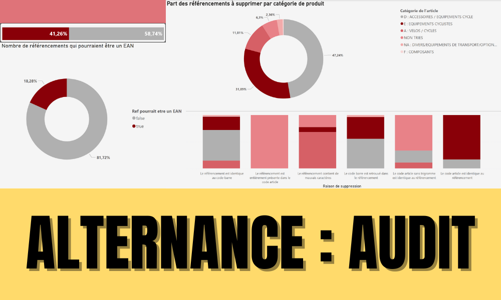
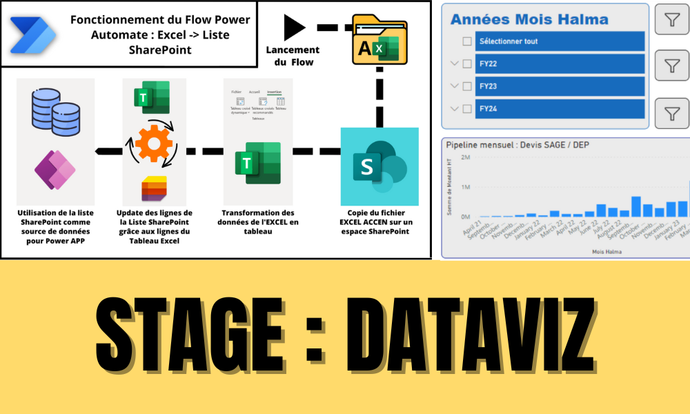
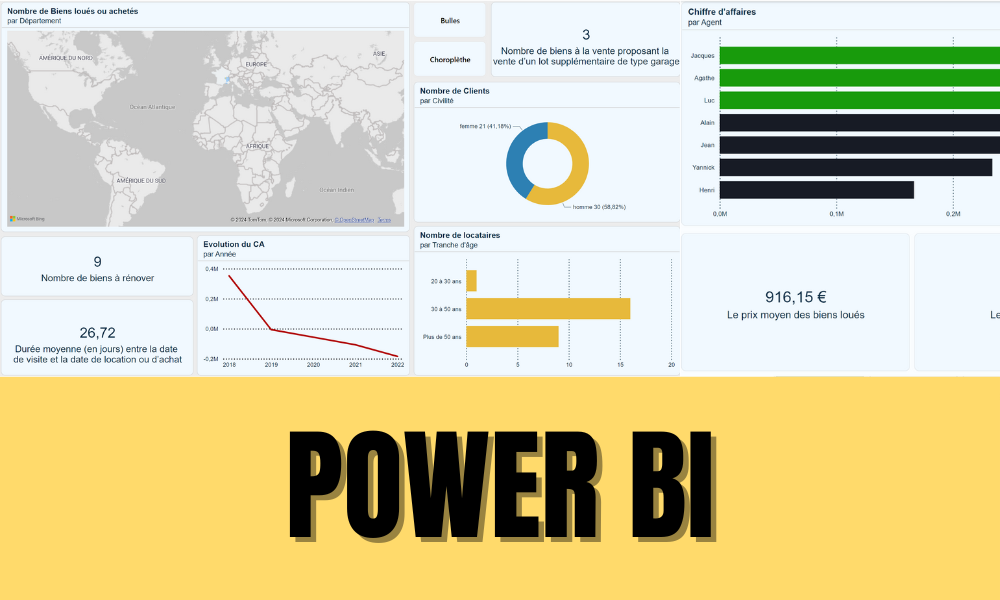
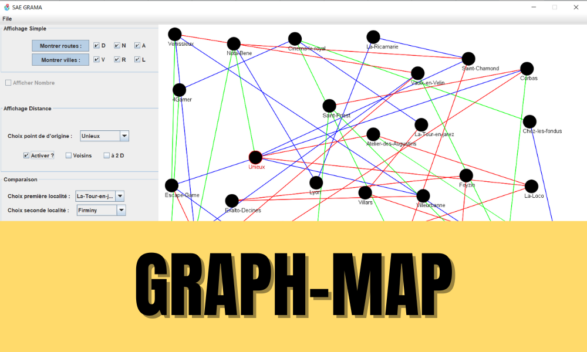
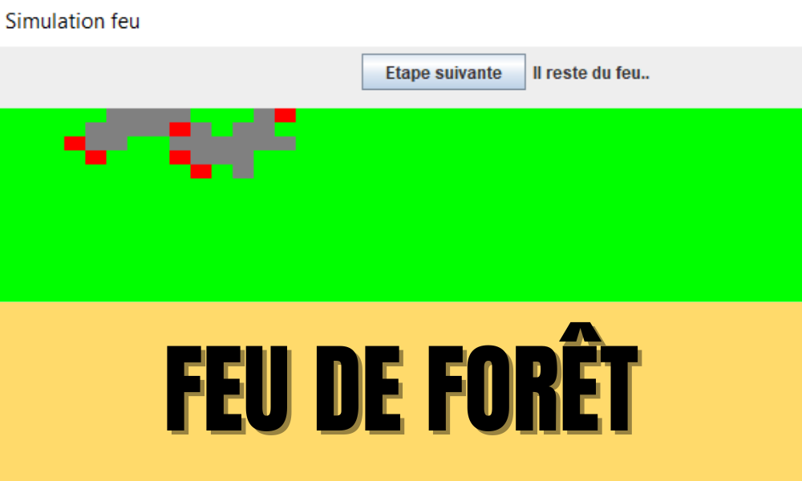
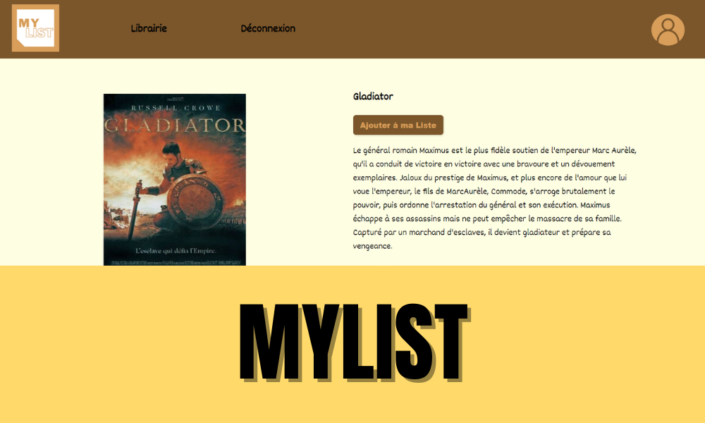
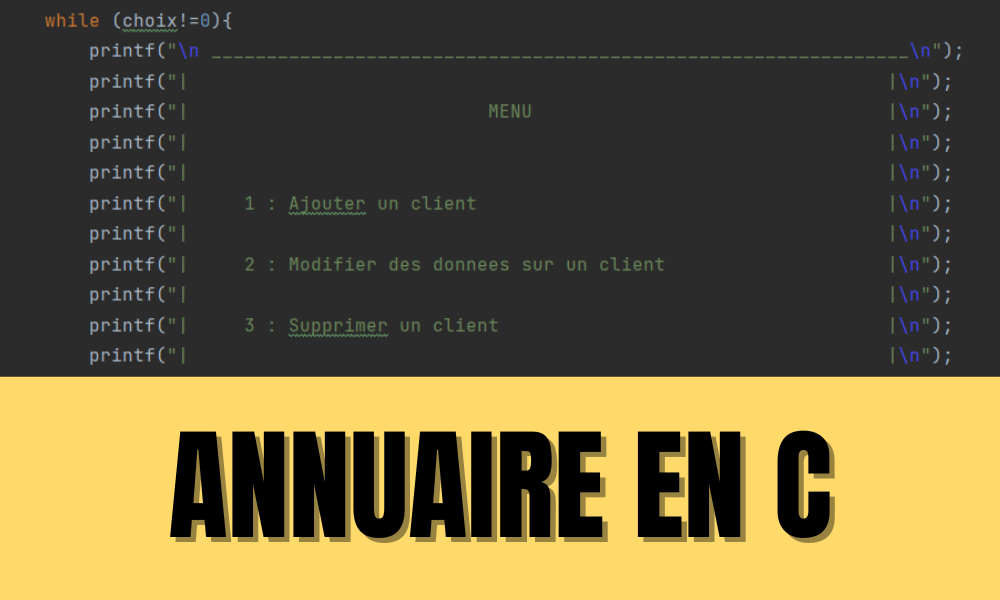

À mon Propos
Ayant fait un BUT Informatique à l'UCBL LYON 1, et étant actuellement en MSc Expert en ingénierie des données, je me destine à des métiers de l'Informatique centrés sur la Data.
Je m'investis aussi beaucoup dans l'associatif, j'ai pu être Secrétaire Général de la Student Club 23/24 et Membre Impliqué du BDE Info 22/23 de mon ancienne Université. Je suis encore bénévole auprès de l'AFEV : "kapseur" depuis près de 3 ans, me permettant de créer du lien avec les habitant.es de mon quartier.
Le sport a pris une place nouvelle : Natation en club, course à pied, randonnée à pied ou vélo et danse font maintenant partie de mon quotidien.
Ce temps investis dans d'autres passions ne dénigre pas mon intérêt pour les Arts visuels, je fais de nombreuses sorties culturelles ainsi que des projets personnels tels que des courts-métrages (50H de Grenoble) ou des montages vidéos. Je suis d'humeur joviale et sociable, j'apprécie les moments privilégiés entre amis tout autant que les nouvelles rencontres.
Passions et Activités
Expériences majeuress
-
Alternance | CYCLABLE ADC | 29/08/2023 - Aujourd'hui
Au sein de Cyclable, une entreprise spécialisée dans le commerce du cycle, j'ai eu l'opportunité d'accompagner mon maître d'apprentissage dans le cadre du support informatique de notre ERP ainsi que sur divers projets stratégiques liés à la qualité de la donnée. Mon rôle principal, au début de mon alternance, a été d'intervenir sur un projet d'audit de la base article, ainsi que de réaliser des actions d'optimisation et de nettoyage de la base de données de l'entreprise. L'objectif initial était d'accompagner l'équipe SI (Systèmes d'Information) dans l'audit et la remise en qualité des différentes tables de la base de données. Cette mission consistait à analyser l’état des données en termes de complétude, de cohérence et d’exactitude, puis à rechercher et proposer des solutions de correction adaptées. Pour cela, je travaillais à partir d'exports de notre ERP ou en me connectant directement à la base de données afin d'effectuer des analyses approfondies et des opérations de nettoyage ciblées. Parallèlement à ce projet, je contribuais également au support utilisateur pour les magasins du réseau Cyclable, en assurant l'assistance fonctionnelle sur l'utilisation quotidienne de notre ERP. Depuis l'obtention de mon BUT Informatique, et dans le cadre de la poursuite de mes études en alternance au sein d'une nouvelle école, mes missions au sein de Cyclable ont naturellement évolué. Aujourd'hui, mon objectif principal est de développer et mettre en place des processus automatisés entre notre système d'information et ceux de nos différents fournisseurs. Ces automatisations visent à fluidifier les échanges de données, à réduire les tâches manuelles et à améliorer la fiabilité des informations échangées. Je continue en parallèle à assurer le support ERP auprès des magasins, consolidant ainsi mon expertise technique tout en contribuant activement à l'amélioration continue des processus métiers de l'entreprise.
-
Stage | HYDREKA | 11/04/2023 - 23/06/2023
Création de Data Warehouses référentiels, création de rapports avec KPI sur Power BI :
Au sein d'Hydreka, une entreprise d'analyse de l'eau sur tout son cycle de vie, mon but était de créer des référentiels (datawarehouse) pour que les salariés de l'entreprise puissent rapidement créer des rapports, j'ai aussi aidé à la création de KPI pour certains salariés, et j'ai pû réaliser un POC d'une Power Apps.
Mes projets principaux
-

Alternance
Audit de la base Article :
Durant ma troisième année, j'avais un projet entre l'école et l'entreprise à réaliser. Dans ce cadre, j'ai donc effectué un audit de la table Article (700 000 lignes) et mis en place un processus de suppression des données néfastes. -

Stage
Création d'un Datawarehouse :
Au sein d'Hydreka, une entreprise d'analyse de l'eau sur tout son cycle. J'ai aidé à la création d'un Datawarehouse orienté sur les prospects. -

Power BI
Gérer des données de l'information :
Plusieurs projets autour de l'outil ont été réalisés, sur la vente de vélos dans le monde, sur les statistiques d'un gestionnaire locatif, sur la qualité de vie des villes de France, sur la pollution du pays... -

Graph-Map
Ce projet a pour vocation d'explorer et d'analyser un graphe-MAP via une interface homme-machine, entre autre une carte contenant des nœuds (localité ou site) et des liens (routes) depuis une interface graphique (JAVA Swing) manipulable par un utilisateur.
-

Simulation de Feu de Forêt
Petit projet dans le cadre d'un entretien technique, le but est de simuler un feu de forêt en fonction de différents paramètres. Le feu aura donc une probabilité de se propager.
-

MyList
MyList est une application WEB destiné aux utilisateurs voulant lister leurs films favoris. Projet de SAE s3 en mode agile avec GitLab.
-
Snake Game
En JavaScript/HTML/CSS :
Refonte du jeu de base avec des maps de différentes tailles, différentes vitesses et l'ajout de murs sur la map. -

Annuaire en C
Projet de gestion d'un annuaire à partir d'un fichier csv :
Il fallait le lire et créer un gestionnaire suffisamment robuste pour pouvoir appliquer des filtres et le trier avec un algorithme de tri choisi lors d'une recherche d'algorithme faite au préalable.